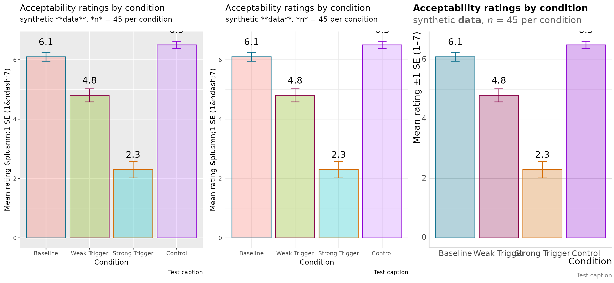
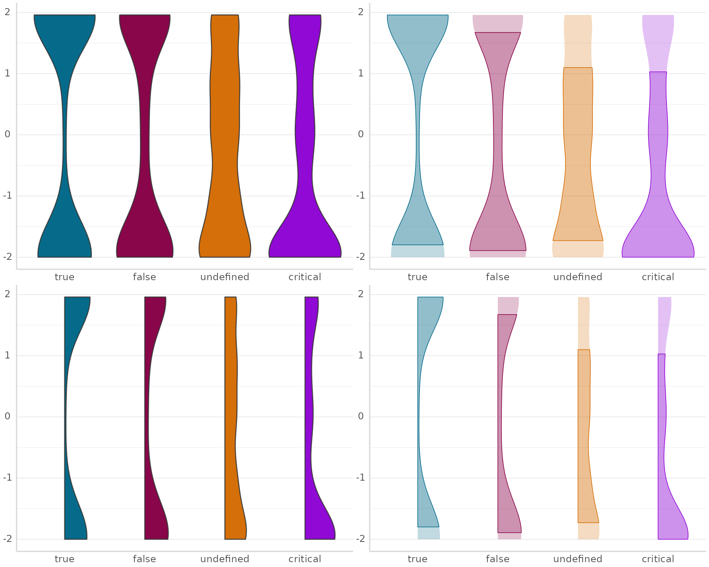
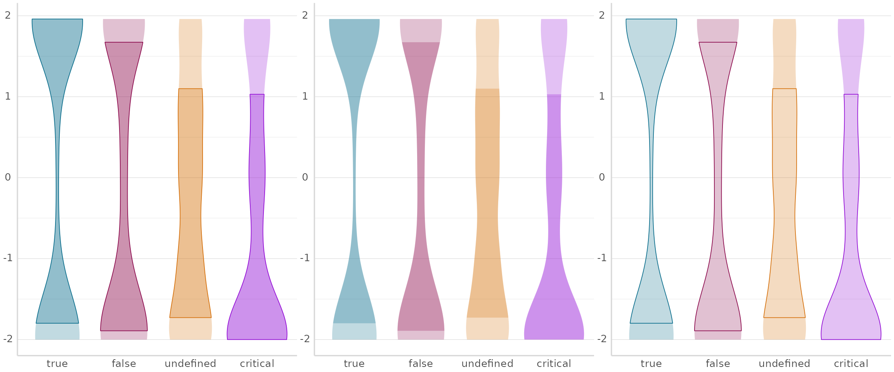
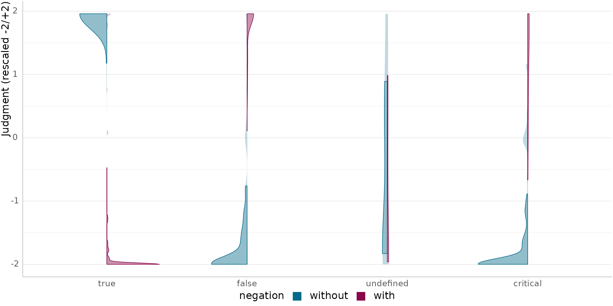
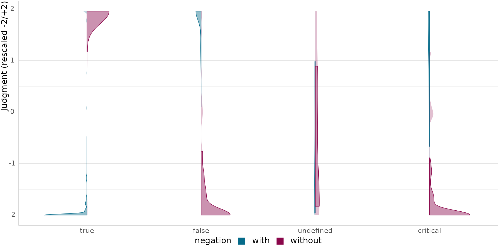
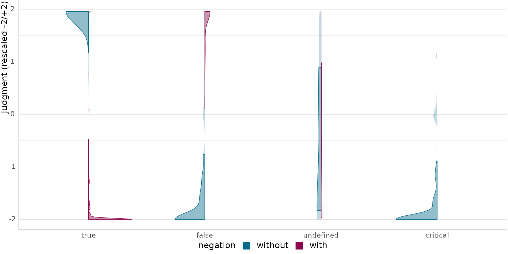
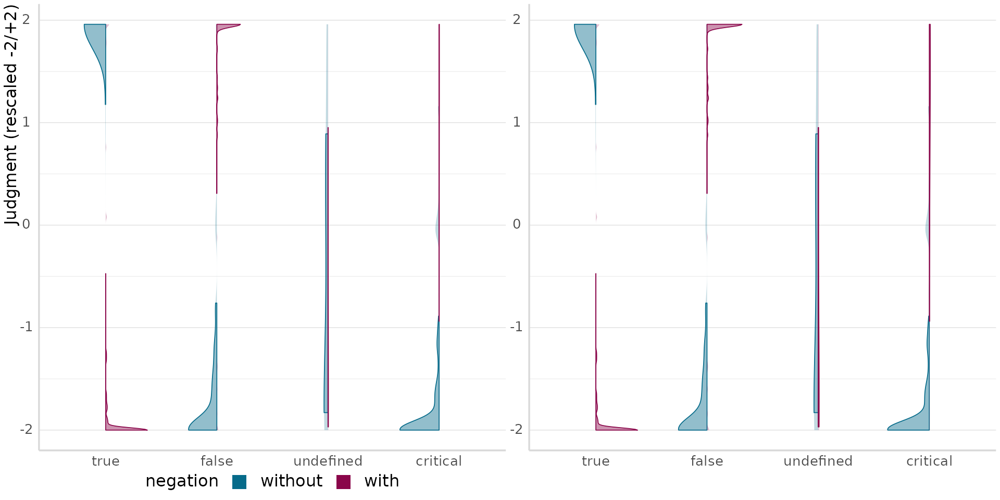

library(emptyviz)
library(ggplot2)
library(dplyr)
library(forcats)
library(gghalves)
library(patchwork)
use_theme_mt()
believe_projection
The demos below use believe_projection, truth-value
judgment data from Thalmann & Matticchio (2024) — a sentence-picture
verification task testing whether presuppositions triggered by
again/stop under a negated belief predicate (“Peter
isn’t certain that Sonja stopped smoking”) project universally or only
relative to the attitude holder. ?believe_projection has
the full column reference; see vignette("bayesian-plots")
for the actual distributional model fit to this data.
sub_exp == "1" restricts to the main judgment task
(dropping training and a separate world-knowledge norming block); the
same three recodes
believe-projection/scripts/belproj-paper.R applies before
modeling — rescaling the 0-100 slider to a signed -2/+2 scale, expanding
the abbreviated "undef" scenario label, and
markdown-italicizing trigger so it renders nicely via
theme_mt()’s markdown-aware axis text — are exactly what’s
reused below and, later, in vignette("bayesian-plots").
d <- believe_projection |>
filter(sub_exp == "1") |>
mutate(
judgment = (judgment - 50) / 25,
scenario = gsub("undef", "undefined", scenario),
scenario = factor(scenario, levels = c("true", "false", "undefined", "critical")),
negation = factor(negation, levels = c("pos", "neg")),
negation = fct_recode(negation, without = "pos", with = "neg"),
trigger = paste0("*", trigger, "*"),
trigger = factor(trigger, levels = c("*again*", "*stop*"))
)
theme_mt()
Extends theme_minimal() with markdown/HTML-aware text
(via ggtext), a bottom legend, and an automatic discrete
color palette. Same data/labels below, only the theme differs:
theme_gray(), theme_minimal(),
theme_mt().
# theme_mt()'s discrete palette and geom_text() font default are both
# theme-level settings that resolve once, from whichever theme is active
# when the plot's scale/geom defaults are first constructed - not from
# whatever theme ends up attached via `+ theme_X()` afterward. Since this
# vignette's global default is theme_mt() (set by use_theme_mt() above),
# the gray/minimal panels need an explicit scale_fill_hue()/family = "sans"
# to force ggplot2's real defaults instead of silently inheriting
# theme_mt()'s.
theme_compare_data <- data.frame(
condition = c("Baseline", "Weak Trigger", "Strong Trigger", "Control"),
mean_rating = c(6.1, 4.8, 2.3, 6.5),
se = c(0.15, 0.22, 0.28, 0.12)
)
theme_compare_data$condition <- factor(
theme_compare_data$condition,
levels = theme_compare_data$condition
)
build_theme_compare_plot <- function() {
ggplot(theme_compare_data, aes(x = condition, y = mean_rating, fill = condition, color = condition)) +
geom_col(alpha = .3) +
geom_errorbar(aes(ymin = mean_rating - se, ymax = mean_rating + se), width = 0.2) +
labs(
title = "Acceptability ratings by condition",
subtitle = "synthetic **data**, *n* = 45 per condition",
x = "Condition", y = "Mean rating ±1 SE (1–7)",
caption = "Test caption"
) +
guides(fill = "none", color = "none")
}
value_label <- function(...) {
geom_text(
aes(label = sprintf("%.1f", mean_rating)),
vjust = -1.8, color = "black", size = 5,
...
)
}
p_theme_gray <- build_theme_compare_plot() + theme_gray() + scale_fill_hue() + value_label(family = "sans")
p_theme_minimal <- build_theme_compare_plot() + theme_minimal() + scale_fill_hue() + value_label(family = "sans")
p_theme_mt <- build_theme_compare_plot() + theme_mt(base_size = 12) + value_label()
p_theme_gray + p_theme_minimal + p_theme_mt
geom_violin_sd() /
geom_half_violin_sd()
Compound layers built on
geom_violin()/gghalves::geom_half_violin(): a
low-alpha “aura” (full density) plus a solid mean ± 1 SD band on
top.
Real truth-value judgments by scenario (collapsed across
negation/ trigger) — floor/ceiling-heavy and
asymmetric in a way rnorm() samples never quite are, which
is exactly the case the “aura + SD-band” split is meant to make
legible.
demo_data <- d |> transmute(group = scenario, value = judgment)
violin_plain <- ggplot(demo_data, aes(x = group, y = value, fill = group)) +
geom_violin() +
labs(x = NULL, y = NULL) +
guides(fill = "none")
violin_sd <- ggplot(demo_data, aes(x = group, y = value, fill = group)) +
geom_violin_sd() +
labs(x = NULL, y = NULL) +
guides(fill = "none")
half_violin_plain <- ggplot(demo_data, aes(x = group, y = value, fill = group)) +
geom_half_violin(side = "r") +
labs(x = NULL, y = NULL) +
guides(fill = "none")
half_violin_sd <- ggplot(demo_data, aes(x = group, y = value, fill = group)) +
geom_half_violin_sd(side = "r") +
labs(x = NULL, y = NULL) +
guides(fill = "none")
(violin_plain + violin_sd) / (half_violin_plain + half_violin_sd)
style = "both" / "fill" /
"outline"
The SD band can be a solid fill, an outline, or both (default) —
shared by all three _sd geoms.
style_both <- ggplot(demo_data, aes(x = group, y = value, fill = group)) +
geom_violin_sd(style = "both") +
labs(x = NULL, y = NULL) +
guides(fill = "none")
style_fill <- ggplot(demo_data, aes(x = group, y = value, fill = group)) +
geom_violin_sd(style = "fill") +
labs(x = NULL, y = NULL) +
guides(fill = "none")
style_outline <- ggplot(demo_data, aes(x = group, y = value, fill = group)) +
geom_violin_sd(style = "outline") +
labs(x = NULL, y = NULL) +
guides(fill = "none")
style_both + style_fill + style_outline
geom_split_violin_sd()
Two geom_half_violin_sd() halves back-to-back, one per
level of split — no manual filtering or
side = "l"/"r" calls needed.
Balanced
ggplot(balanced_data, split_mapping) +
geom_split_violin_sd(split_mapping, data = balanced_data, split = negation) +
labs(x = NULL, y = "Judgment (rescaled -2/+2)")
flip = TRUE
Same data, sides swapped.
ggplot(balanced_data, split_mapping) +
geom_split_violin_sd(split_mapping, data = balanced_data, split = negation, flip = TRUE) +
labs(x = NULL, y = "Judgment (rescaled -2/+2)")
Missing cell
Dropping critical/with entirely warns, not
errors, and still renders a lone half-violin.
missing_data <- balanced_data |>
filter(!(scenario == "critical" & negation == "with"))
ggplot(missing_data, split_mapping) +
geom_split_violin_sd(split_mapping, data = missing_data, split = negation) +
labs(x = NULL, y = "Judgment (rescaled -2/+2)")
#> Warning: geom_split_violin_sd(): thin or one-sided x-levels - critical (missing
#> one side entirely)
scale = "count" vs. "area"
scale only normalizes a side against itself, not against
the other side — geom_split_violin_sd()’s two sides are
separate Stat computations, so scale can only
compare an x-level against its own side’s other x-levels, never
against the other side’s counts. The real cells above are all ~100
trials, so the effect needs an example: subsampling with
down across scenario (holding without fixed)
engineers the imbalance while keeping every plotted judgment a real
trial, rather than fabricating ratings — "count" (left,
default) lets the shrinking with N narrow that side’s
violin; "area" (right) hides it entirely.
set.seed(42)
with_fracs <- c(true = 1, false = .7, undefined = .45, critical = .25)
unbalanced_data <- bind_rows(
balanced_data |> filter(negation == "without"),
balanced_data |>
filter(negation == "with") |>
group_by(scenario) |>
group_modify(~ slice_sample(.x, prop = with_fracs[[as.character(.y$scenario)]])) |>
ungroup()
)
p_scale_count <- ggplot(unbalanced_data, split_mapping) +
geom_split_violin_sd(split_mapping, data = unbalanced_data, split = negation) +
labs(x = NULL, y = "Judgment (rescaled -2/+2)")
p_scale_area <- ggplot(unbalanced_data, split_mapping) +
geom_split_violin_sd(
split_mapping,
data = unbalanced_data, split = negation, scale = "area"
) +
labs(x = NULL, y = NULL) +
guides(fill = "none")
p_scale_count + p_scale_area